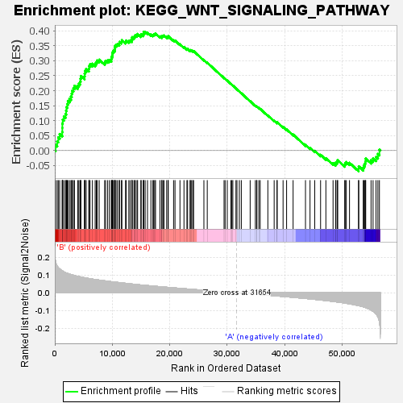
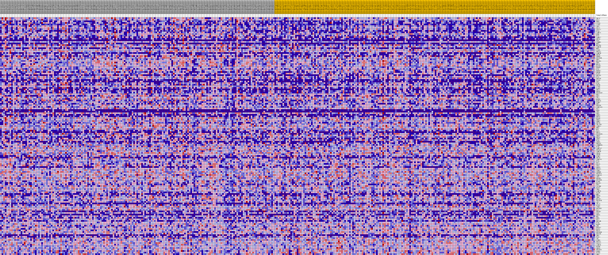
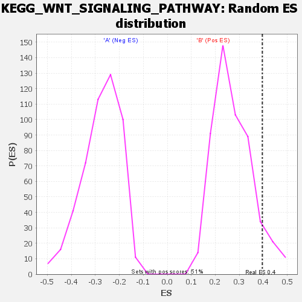

| | | Dataset | my.my.cls#B_versus_A.my.cls#B_versus_A_repos |
| Phenotype | my.cls#B_versus_A_repos |
| Upregulated in class | B |
| GeneSet | KEGG_WNT_SIGNALING_PATHWAY |
| Enrichment Score (ES) | 0.39614692 |
| Normalized Enrichment Score (NES) | 1.454677 |
| Nominal p-value | 0.086105675 |
| FDR q-value | 0.70814186 |
| FWER p-Value | 0.809 |
Table: GSEA Results Summary

Fig 1: Enrichment plot: KEGG_WNT_SIGNALING_PATHWAY
Profile of the Running ES Score & Positions of GeneSet Members on the Rank Ordered List
| SYMBOL | TITLE | RANK IN GENE LIST | RANK METRIC SCORE | RUNNING ES | CORE ENRICHMENT | | 1 | TBL1X | na | 121 | 0.177 | 0.0185 | Yes |
| 2 | DVL3 | na | 409 | 0.150 | 0.0309 | Yes |
| 3 | WNT6 | na | 605 | 0.142 | 0.0440 | Yes |
| 4 | CXXC4 | na | 842 | 0.134 | 0.0554 | Yes |
| 5 | AXIN2 | na | 1293 | 0.123 | 0.0618 | Yes |
| 6 | LEF1 | na | 1311 | 0.123 | 0.0759 | Yes |
| 7 | SOX17 | na | 1316 | 0.123 | 0.0902 | Yes |
| 8 | TCF7L1 | na | 1370 | 0.122 | 0.1034 | Yes |
| 9 | FZD9 | na | 1579 | 0.118 | 0.1135 | Yes |
| 10 | CAMK2A | na | 1860 | 0.113 | 0.1218 | Yes |
| 11 | BTRC | na | 1970 | 0.112 | 0.1329 | Yes |
| 12 | FZD2 | na | 2023 | 0.111 | 0.1450 | Yes |
| 13 | VANGL2 | na | 2176 | 0.109 | 0.1550 | Yes |
| 14 | WNT16 | na | 2276 | 0.108 | 0.1659 | Yes |
| 15 | WIF1 | na | 2551 | 0.105 | 0.1733 | Yes |
| 16 | CTNNB1 | na | 2807 | 0.102 | 0.1807 | Yes |
| 17 | NKD1 | na | 2938 | 0.101 | 0.1902 | Yes |
| 18 | NFATC4 | na | 3033 | 0.100 | 0.2003 | Yes |
| 19 | CSNK1E | na | 3238 | 0.099 | 0.2082 | Yes |
| 20 | NKD2 | na | 3422 | 0.097 | 0.2162 | Yes |
| 21 | SIAH1 | na | 4002 | 0.092 | 0.2168 | Yes |
| 22 | PRKACA | na | 4181 | 0.091 | 0.2243 | Yes |
| 23 | CAMK2B | na | 4397 | 0.090 | 0.2309 | Yes |
| 24 | WNT5B | na | 4481 | 0.089 | 0.2398 | Yes |
| 25 | SFRP4 | na | 4539 | 0.089 | 0.2491 | Yes |
| 26 | PPP2R5B | na | 5162 | 0.085 | 0.2480 | Yes |
| 27 | WNT3 | na | 5196 | 0.084 | 0.2573 | Yes |
| 28 | NFATC3 | na | 5251 | 0.084 | 0.2662 | Yes |
| 29 | PRKX | na | 5463 | 0.083 | 0.2721 | Yes |
| 30 | NFAT5 | na | 5919 | 0.080 | 0.2734 | Yes |
| 31 | MAP3K7 | na | 5970 | 0.080 | 0.2819 | Yes |
| 32 | PORCN | na | 6131 | 0.079 | 0.2883 | Yes |
| 33 | FZD7 | na | 6543 | 0.077 | 0.2900 | Yes |
| 34 | RUVBL1 | na | 7016 | 0.075 | 0.2903 | Yes |
| 35 | WNT8B | na | 7223 | 0.074 | 0.2953 | Yes |
| 36 | PLCB1 | na | 7387 | 0.073 | 0.3009 | Yes |
| 37 | WNT10A | na | 7720 | 0.071 | 0.3034 | Yes |
| 38 | FZD1 | na | 8673 | 0.067 | 0.2944 | Yes |
| 39 | PRKACB | na | 8823 | 0.067 | 0.2995 | Yes |
| 40 | FZD10 | na | 9168 | 0.065 | 0.3010 | Yes |
| 41 | DKK1 | na | 9480 | 0.064 | 0.3030 | Yes |
| 42 | FZD8 | na | 9840 | 0.062 | 0.3039 | Yes |
| 43 | WNT9B | na | 9854 | 0.062 | 0.3109 | Yes |
| 44 | AXIN1 | na | 9958 | 0.062 | 0.3163 | Yes |
| 45 | DAAM2 | na | 10023 | 0.062 | 0.3224 | Yes |
| 46 | WNT7A | na | 10060 | 0.062 | 0.3289 | Yes |
| 47 | WNT9A | na | 10211 | 0.061 | 0.3334 | Yes |
| 48 | PRICKLE2 | na | 10398 | 0.060 | 0.3371 | Yes |
| 49 | RBX1 | na | 10431 | 0.060 | 0.3435 | Yes |
| 50 | WNT2 | na | 10489 | 0.060 | 0.3495 | Yes |
| 51 | CUL1 | na | 10646 | 0.059 | 0.3537 | Yes |
| 52 | MAPK8 | na | 10898 | 0.058 | 0.3560 | Yes |
| 53 | MAPK10 | na | 11212 | 0.057 | 0.3572 | Yes |
| 54 | CCND1 | na | 11255 | 0.057 | 0.3631 | Yes |
| 55 | WNT1 | na | 11589 | 0.056 | 0.3637 | Yes |
| 56 | PPP3CB | na | 11670 | 0.055 | 0.3688 | Yes |
| 57 | CSNK1A1L | na | 12303 | 0.053 | 0.3638 | Yes |
| 58 | DVL2 | na | 12434 | 0.053 | 0.3676 | Yes |
| 59 | DKK4 | na | 12873 | 0.051 | 0.3659 | Yes |
| 60 | CER1 | na | 13099 | 0.050 | 0.3677 | Yes |
| 61 | SKP1 | na | 13410 | 0.049 | 0.3680 | Yes |
| 62 | SFRP1 | na | 13437 | 0.049 | 0.3733 | Yes |
| 63 | WNT3A | na | 13455 | 0.049 | 0.3787 | Yes |
| 64 | EP300 | na | 13769 | 0.048 | 0.3787 | Yes |
| 65 | PRKCA | na | 13897 | 0.047 | 0.3820 | Yes |
| 66 | SENP2 | na | 14010 | 0.047 | 0.3855 | Yes |
| 67 | WNT2B | na | 14298 | 0.046 | 0.3859 | Yes |
| 68 | TBL1XR1 | na | 14403 | 0.046 | 0.3894 | Yes |
| 69 | VANGL1 | na | 14972 | 0.044 | 0.3844 | Yes |
| 70 | RHOA | na | 15025 | 0.044 | 0.3886 | Yes |
| 71 | NLK | na | 15396 | 0.043 | 0.3871 | Yes |
| 72 | RAC3 | na | 15440 | 0.043 | 0.3913 | Yes |
| 73 | WNT11 | na | 15455 | 0.043 | 0.3960 | Yes |
| 74 | PRICKLE1 | na | 15721 | 0.042 | 0.3961 | Yes |
| 75 | SMAD2 | na | 16124 | 0.041 | 0.3938 | No |
| 76 | WNT5A | na | 16716 | 0.039 | 0.3878 | No |
| 77 | SFRP2 | na | 17060 | 0.038 | 0.3861 | No |
| 78 | FZD3 | na | 17202 | 0.037 | 0.3880 | No |
| 79 | SFRP5 | na | 17377 | 0.037 | 0.3892 | No |
| 80 | PRKACG | na | 17521 | 0.036 | 0.3909 | No |
| 81 | CTNNBIP1 | na | 18292 | 0.034 | 0.3813 | No |
| 82 | FZD4 | na | 18610 | 0.033 | 0.3796 | No |
| 83 | CSNK2A2 | na | 18619 | 0.033 | 0.3833 | No |
| 84 | PPP3CC | na | 18816 | 0.033 | 0.3837 | No |
| 85 | CSNK2B | na | 18993 | 0.032 | 0.3843 | No |
| 86 | SMAD4 | na | 19454 | 0.031 | 0.3798 | No |
| 87 | GSK3B | na | 19705 | 0.030 | 0.3789 | No |
| 88 | CCND2 | na | 19735 | 0.030 | 0.3819 | No |
| 89 | WNT7B | na | 20664 | 0.028 | 0.3687 | No |
| 90 | CSNK2A1 | na | 20912 | 0.027 | 0.3675 | No |
| 91 | FZD5 | na | 21774 | 0.025 | 0.3552 | No |
| 92 | RAC2 | na | 22472 | 0.023 | 0.3455 | No |
| 93 | FRAT1 | na | 22985 | 0.022 | 0.3390 | No |
| 94 | TP53 | na | 23100 | 0.021 | 0.3394 | No |
| 95 | PRKCG | na | 23529 | 0.020 | 0.3342 | No |
| 96 | FBXW11 | na | 23587 | 0.020 | 0.3356 | No |
| 97 | CTBP2 | na | 23798 | 0.020 | 0.3341 | No |
| 98 | CREBBP | na | 24006 | 0.019 | 0.3327 | No |
| 99 | PPP2R1A | na | 24145 | 0.019 | 0.3324 | No |
| 100 | CSNK1A1 | na | 25937 | 0.014 | 0.3023 | No |
| 101 | LRP5 | na | 26522 | 0.013 | 0.2934 | No |
| 102 | PPP3R1 | na | 29444 | 0.005 | 0.2423 | No |
| 103 | PPP2R5D | na | 29629 | 0.005 | 0.2397 | No |
| 104 | DAAM1 | na | 30005 | 0.004 | 0.2335 | No |
| 105 | NFATC1 | na | 30617 | 0.003 | 0.2230 | No |
| 106 | DKK2 | na | 30793 | 0.002 | 0.2201 | No |
| 107 | CACYBP | na | 30972 | 0.002 | 0.2171 | No |
| 108 | ROCK2 | na | 31515 | 0.000 | 0.2076 | No |
| 109 | LRP6 | na | 31690 | -0.000 | 0.2045 | No |
| 110 | CAMK2G | na | 32105 | -0.001 | 0.1973 | No |
| 111 | PLCB4 | na | 32447 | -0.002 | 0.1915 | No |
| 112 | MMP7 | na | 33985 | -0.006 | 0.1649 | No |
| 113 | PRKCB | na | 34892 | -0.008 | 0.1498 | No |
| 114 | CHD8 | na | 35109 | -0.009 | 0.1470 | No |
| 115 | NFATC2 | na | 35158 | -0.009 | 0.1472 | No |
| 116 | PPP2R1B | na | 35497 | -0.009 | 0.1423 | No |
| 117 | APC2 | na | 35728 | -0.010 | 0.1394 | No |
| 118 | TBL1Y | na | 37062 | -0.014 | 0.1174 | No |
| 119 | PLCB2 | na | 38162 | -0.016 | 0.0998 | No |
| 120 | CTBP1 | na | 38667 | -0.018 | 0.0930 | No |
| 121 | PPP2R5C | na | 38670 | -0.018 | 0.0950 | No |
| 122 | RAC1 | na | 39710 | -0.021 | 0.0790 | No |
| 123 | PPP3R2 | na | 40324 | -0.022 | 0.0707 | No |
| 124 | TCF7 | na | 41455 | -0.025 | 0.0537 | No |
| 125 | WNT8A | na | 43609 | -0.032 | 0.0193 | No |
| 126 | MYC | na | 44399 | -0.034 | 0.0093 | No |
| 127 | WNT4 | na | 45218 | -0.037 | -0.0009 | No |
| 128 | DVL1 | na | 46236 | -0.040 | -0.0142 | No |
| 129 | WNT10B | na | 47157 | -0.044 | -0.0254 | No |
| 130 | FZD6 | na | 48406 | -0.048 | -0.0418 | No |
| 131 | MAPK9 | na | 48865 | -0.050 | -0.0441 | No |
| 132 | JUN | na | 48909 | -0.051 | -0.0389 | No |
| 133 | PPP3CA | na | 49166 | -0.052 | -0.0374 | No |
| 134 | ROCK1 | na | 49209 | -0.052 | -0.0321 | No |
| 135 | FRAT2 | na | 50433 | -0.057 | -0.0471 | No |
| 136 | PPP2R5E | na | 50511 | -0.058 | -0.0417 | No |
| 137 | PPP2CB | na | 50714 | -0.059 | -0.0384 | No |
| 138 | CHP2 | na | 51267 | -0.062 | -0.0410 | No |
| 139 | FOSL1 | na | 52833 | -0.072 | -0.0603 | No |
| 140 | APC | na | 52881 | -0.072 | -0.0527 | No |
| 141 | CCND3 | na | 53658 | -0.078 | -0.0573 | No |
| 142 | PPP2CA | na | 53755 | -0.080 | -0.0497 | No |
| 143 | TCF7L2 | na | 53938 | -0.082 | -0.0434 | No |
| 144 | CAMK2D | na | 54027 | -0.082 | -0.0354 | No |
| 145 | PPARD | na | 54087 | -0.083 | -0.0267 | No |
| 146 | SMAD3 | na | 55016 | -0.097 | -0.0319 | No |
| 147 | PPP2R5A | na | 55365 | -0.104 | -0.0259 | No |
| 148 | PSEN1 | na | 55879 | -0.117 | -0.0213 | No |
| 149 | PLCB3 | na | 56203 | -0.133 | -0.0114 | No |
| 150 | CHP1 | na | 56470 | -0.161 | 0.0027 | No |
Table: GSEA details [plain text format]

Fig 2: KEGG_WNT_SIGNALING_PATHWAY
Blue-Pink O' Gram in the Space of the Analyzed GeneSet

Fig 3: KEGG_WNT_SIGNALING_PATHWAY: Random ES distribution
Gene set null distribution of ES for KEGG_WNT_SIGNALING_PATHWAY